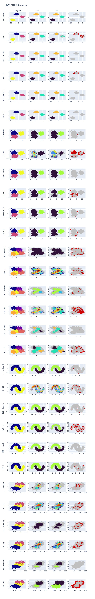

Tutorial 8 - HDBSCAN Differences between CPU and GPU versions
This tutorial is a basic example of some differences that we should expect when we run two models that were implemented for different device targets.
We will use DASF to demonstrate how to compare two models using different samples of data.
First, let’s create a collection of 2-D samples (because it is easy to visualize using simple techniques). Feel free to test it using other dimensions as an excercise.
[1]:
from dasf.datasets import make_blobs
# There is no make_moons for GPU, so we need to use from sklearn
from sklearn.datasets import make_blobs, make_moons
class Params:
""" Convert a dict into an object. """
def __init__(self, **kwargs):
self.__dict__.update(kwargs)
def generate_blobs_collection():
blobs = []
X, y, c = make_blobs(n_samples=1000,
centers=3,
n_features=2,
return_centers=True,
random_state=42)
blobs.append({'X': X, 'y': y, 'centroids': c})
X, y, c = make_blobs(n_samples=1000,
return_centers=True,
random_state=30)
blobs.append({'X': X, 'y': y, 'centroids': c})
X, y, c = make_blobs(n_samples=4000,
centers=[(-0.75,2.25),
(1.0, 2.0),
(1.0, 1.0),
(2.0, -0.5),
(-1.0, -1.0),
(0.0, 0.0)],
cluster_std=0.5,
return_centers=True,
random_state=12)
blobs.append({'X': X, 'y': y, 'centroids': c})
X, y = make_moons(n_samples=3000,
noise=0.1,
random_state=42)
blobs.append({'X': X, 'y': y, 'centroids': []})
X, y, c = make_blobs(n_samples=2000,
n_features=2,
center_box=(100, 200),
return_centers=True,
cluster_std=15)
blobs.append({'X': X, 'y': y, 'centroids': c})
params = []
for i in range(len(blobs)):
for size in [5, 10, 50]:
blobs[i]['min_cluster_size'] = size
params.append(Params(**blobs[i]))
blobs[i]['min_samples'] = 1
params.append(Params(**blobs[i]))
del blobs[i]['min_samples']
return params
Even if we fix the seed, we can have different classes bewteen CPU and GPU. The function below is defined just to guarantee that the classes matches. It is a kind of brute force function to have a minimal map between classes.
The heuristc just change one of the samples to negative and try to compare with the positive sample. If some negative number still remains in the converted sample, it means that there is no match between samples. So, the action is to revert to original value.
[2]:
def match_classes_heuristic(y1, y2):
# Convert y2 to negative to avoid extra checks
y2 = (y2 * -1) - 2
# Register conveersions
conversion_dict = {}
for i in range(len(y1)):
# Try to match positive numbers from y1
# to negative numbers from y2.
if y1[i] >= 0 and y2[i] < -1:
conversion_dict[y2[i]] = y1[i]
y2[y2 == y2[i]] = y1[i]
# Convert non converted values
for t2, t1 in conversion_dict.items():
y2[y2 == t2] = t1
for i in range(len(y2)):
# Return to original value what does not match.
if y2[i] < 0:
y2[i] = (y2[i] + 2) * -1
return y1, y2
Now, we can create a loop that iterates thru the samples and the parameters we introduced in function generate_blobs_collection() to test two versions of HDBSCAN.
For this experiment, we don’t need to create a pipeline because this is a simple one and HDBSCAN does not work with Dask. It should be a relatively simple experiment.
[3]:
from dasf.ml.cluster import HDBSCAN
params = generate_blobs_collection()
# If you would like to, here you can setup your figure or plot library.
# Below, we will use a plotly code sample. Feel free to use and include
# the required libraries with `pip3 install plotly kaleido`
# (INSER CODE 1 HERE)
for i in range(0, len(params)):
if hasattr(params[i], 'min_samples'):
cpu_model = HDBSCAN(min_cluster_size=params[i].min_cluster_size, min_samples=params[i].min_samples)
else:
cpu_model = HDBSCAN(min_cluster_size=params[i].min_cluster_size)
cpu_pred = cpu_model._fit_predict_cpu(X=params[i].X)
if hasattr(params[i], 'min_samples'):
gpu_model = HDBSCAN(min_cluster_size=params[i].min_cluster_size, min_samples=params[i].min_samples)
else:
gpu_model = HDBSCAN(min_cluster_size=params[i].min_cluster_size)
gpu_pred = gpu_model._fit_predict_gpu(X=params[i].X)
cpu_pred, gpu_pred = match_classes_heuristic(cpu_pred, gpu_pred)
# Here you can add some subplot content to show the samples and predictions.
# (INSER CODE 2 HERE)
The results of the previous task can be seen in the image below. At least, for dense distributions it is clear to see some differences even when min_samples are default. It is even worst when min_samples=1.

Plot Data (Optional)
If you want to use Plotly to plot the same results. You can include the following code into part 1 and 2. The part 1 can be like the code below.
fig = make_subplots(rows=len(params), cols=4, subplot_titles=("Original", "CPU", "GPU", "Diff"))
fig.update_layout(height=5000, width=800, title_text="HDBSCAN Differences")
And the second part that plots the subplots can be like the code below.
if hasattr(params[i], 'min_samples'):
yaxis_min_samples = str(params[i].min_samples)
else:
yaxis_min_samples = "default"
fig.add_trace(
go.Scatter(
x=params[i].X[:, 0],
y=params[i].X[:, 1],
mode="markers",
marker=dict(color=params[i].y),
showlegend=False,
),
row=i + 1, col=1
)
fig.update_yaxes(title_text=f"({params[i].min_cluster_size} - {yaxis_min_samples})", row=i + 1, col=1)
n_colors = np.max([np.max(cpu_pred), np.max(gpu_pred)]) + 1
color_scale = px.colors.sample_colorscale("turbo", [n/(n_colors) for n in range(n_colors)])
cpu_pred_colors = ['rgb(192,192,192)' if x < 0 else color_scale[x] for x in cpu_pred]
fig.add_trace(
go.Scatter(
x=params[i].X[:, 0],
y=params[i].X[:, 1],
mode="markers",
marker=dict(color=cpu_pred_colors),
showlegend=False
),
row=i + 1, col=2
)
gpu_pred_colors = ['rgb(192,192,192)' if x < 0 else color_scale[x] for x in gpu_pred]
fig.add_trace(
go.Scatter(
x=params[i].X[:, 0],
y=params[i].X[:, 1],
mode="markers",
marker=dict(color=gpu_pred_colors),
showlegend=False
),
row=i + 1, col=3
)
diff_pred_colors = ['rgba(192,192,192,220)' if x == 0 else 'rgb(210,5,5)' for x in cpu_pred - gpu_pred]
fig.add_trace(
go.Scatter(
x=params[i].X[:, 0],
y=params[i].X[:, 1],
mode="markers",
marker=dict(color=diff_pred_colors),
showlegend=False
),
row=i + 1, col=4
)
[ ]: